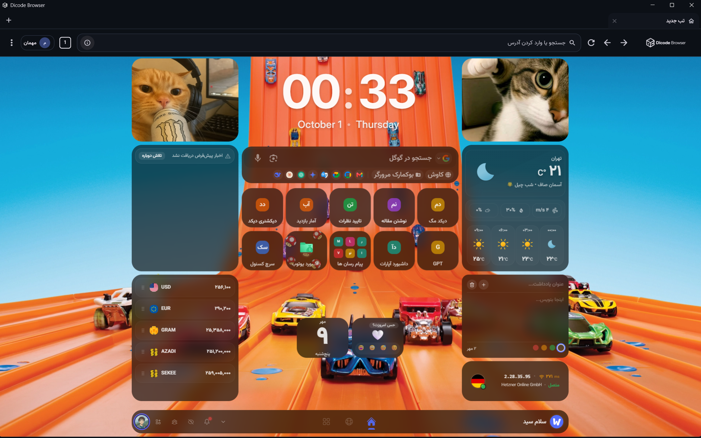
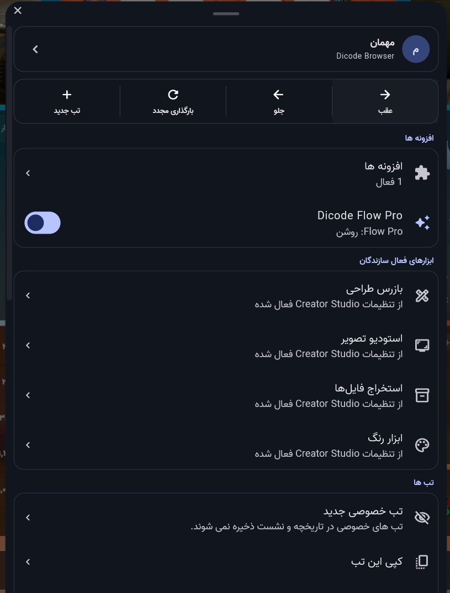
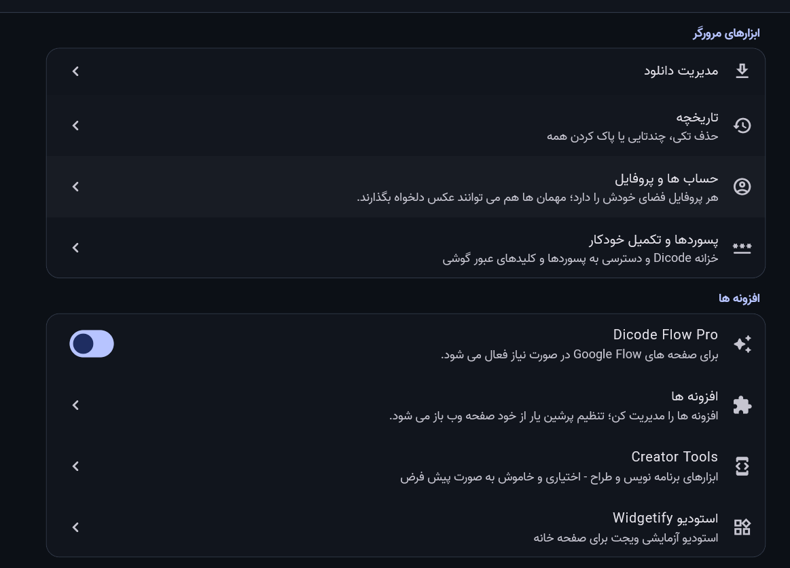

تبها، مرتب و دمِ دست
صفحههای باز را راحت پیدا کن و بیدردسر بینشان جابهجا شو.
مرورگر دیکد · نسخهٔ ۱.۰.۲
جستوجو، تبها، ویجتهای خانه و ابزارهای وب؛ مرتب و یکجا، با حالوهوایی که خودت انتخاب میکنی.
نسخهٔ ۱.۰.۲ · Android، Windows، Linux و macOS

همراهِ وبگردی هر روز
صفحههای باز را راحت پیدا کن و بیدردسر بینشان جابهجا شو.
ویجتها و میانبرها را بچین؛ صفحهٔ آغازینت را مطابق سلیقهات بساز.
از افزونهها و دانلودها تا ابزارهای وب؛ هر وقت لازم شد، همانجا سراغشان برو.
از نزدیک ببین
یک نگاه به مرورگر دیکد روی Android و پنل تنظیمات و ابزارهای دسکتاپ.


همهٔ فایلهای نسخهٔ ۱.۰.۲
۶۴ بیتی · نصب برای کاربر جاری
مطمئن نیستی؟ ARM64 برای بیشتر گوشیهای جدید مناسبه
رایانههای ۶۴ بیتی · بستهٔ فشردهٔ tar.gz
نسخهٔ متناسب با پردازندهٔ مک را بگیر